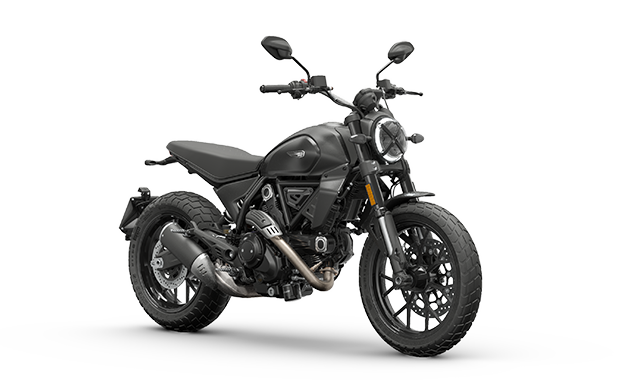

803 cc
Bicilindrica con mucha identidad.
Ficha dedicada
La Scrambler Icon se orienta a una experiencia mas emocional y de estilo de vida. Combina una postura comoda, motor con presencia y una identidad visual muy marcada para quien quiere algo mas que solo transporte.

Bicilindrica con mucha identidad.
Respuesta amplia y con presencia.
Tanque funcional para uso recreativo.
Muy fuerte en personalidad y diseño.
No es una moto pensada solo desde lo practico. Su gran valor esta en como combina diseño, experiencia, postura y una identidad muy marcada dentro del mercado.
Escoge el tipo de uso y revisa una referencia sencilla para el tanque lleno.
Escenario elegido
Ciudad
Con el tanque lleno podria recorrer alrededor de 224 km
Referencia usada: 16 km/l
El consumo puede variar mucho segun ritmo, peso y tipo de trayecto.
Es una moto que encaja en quien prioriza caracter, diseño y una experiencia con mucha mas identidad emocional.
No apunta tanto a la practicidad pura como a disfrutar la moto como parte del estilo de vida.